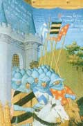

главная  персоналии
персоналии  Вальтер Голяк
Вальтер Голяк
главная |

Личность в историикраткая энциклопедияПроект «Личность в истории» посвящен людям — современникам грандиозных исторических событий, носителям редких качеств или людям, взгляды которых опередили их время. |
|||||
Коротко |
Статьи |
Персоналии |
Литература |
||
Вальтер Голяк |
|||||
|
«У меня есть обыкновение всякое дело, имеет оно видимость доброго или кажется иным, не только рассматривать само по себе, но исследовать его причины и возможные результаты». Михаил Пселл. |

Братья Лимбург. | ||||
Биографическая справкаВальтер Голяк (? – 1096) — разорившийся рыцарь из Северной Франции, один из руководителей т. н. Крестового Похода бедноты, где выступал в качестве военного специалиста. Неизвестно какими именно военными способностями он обладал, поскольку в первом же серьезном столкновении с сельджуками погиб в бою. Практически все крестьянское ополчение было уничтожено. Цитаты«После Клермонского собора проповедь войны с «неверными» развернули епископы, священники и монахи. Наибольшую популярность среди простого народа приобрел монах Петр Амьенский (Пустынник), призывавший к участию в походе простой народ в Северной и Средней Франции, а также в прирейнской Германии. Под влиянием его проповедей ранней весной 1096 г. десятки тысяч бедняков поднялись на «святое паломничество». Ими предводительствовали Петр Пустынник, разорившийся рыцарь Вальтер Голяк из Северной Франции и священник Готшалк из Рейнской области. Нестройными толпами, вооруженные лишь дубинками, косами, топорами, без запасов продовольствия участники похода шли вдоль Рейна и Дуная и далее на юг к Константинополю. Темные, изголодавшиеся крестьянские массы, к которым присоединилось немало различных авантюристов из обедневшего рыцарства, проходя через владения венгров, болгар, греков, отнимали у жителей продукты, грабили, убивали, насильничали; в прирейнских городах рыцари-грабители устраивали еврейские погромы. Местное население давало энергичный отпор неожиданным пришельцам. Крестоносцы понесли большие потери. Сильно поредевшее крестьянское войско летом 1096 г. прибыло в Константинополь. Здесь оно повело себя столь же разнузданно. Алексей Комнин поспешил переправить крестьян на другой берег Босфора, в Малую Азию. Не ожидая подхода основных сил рыцарей-крестоносцев, бедняки устремились вперед. В октябре 1096 г. сельджукское войско заманило крестьянские отряды в засаду и почти полностью перебило их. Так наивные иллюзии крестьян, мечтавших совершить религиозный подвиг и добиться освобождения, разбились при первом столкновении с действительностью.». (История средних веков (в двух томах ). «Их путь через Германию ознаменовался бесчинствами и погромами, поэтому чем дальше, тем более враждебно относилось к ним население по пути их следования. Многие мелкие отряды, оторвавшиеся от основной массы, были перебиты еще на пути к Константинополю..» (История Востока. т. 2. Восток в средние века., «Общий порыв увлек их, и они заполнили все дороги. <…> …их было больше, чем песка на берегу и звезд в небе, и на плечах у них были красные кресты.». (Анна Комнина. Алексиада. Книга Х. 5.) «Двигаясь неправильным строем и не отрядами, они наткнулись на турок, устроивших засаду <…> и были убиты самым жалким образом.». (Анна Комнина. Алексиада. Книга Х. 6.) Список литературы
|
|||||
|
{kind=link}